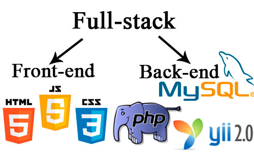

Коротко о web-разработке
Веб-разработка — процесс создания веб-сайта или веб-приложения. Основными этапами процесса являются веб-дизайн, вёрстка страниц, программирование на стороне клиента и сервера, а также конфигурирование веб-сервера.

Этапы разработки веб-сайта
- Проектирование сайта или веб-приложения (сбор и анализ требований, разработка технического задания, проектирование интерфейсов);
- Разработка креативной концепции сайта;
- Создание дизайн-концепции сайта;
- Создание макетов страниц;
- Создание мультимедиа и FLASH-элементов;
- Вёрстка страниц и шаблонов;
- Программирование (разработка функциональных инструментов) или интеграция в систему управления содержимым (CMS);
- Оптимизация и размещение[уточнить] материалов сайта;
- Тестирование и внесение корректировок;
- Публикация проекта на хостинге;
- Обслуживание работающего сайта или его программной основы.
Что такое html?
Что такое css?